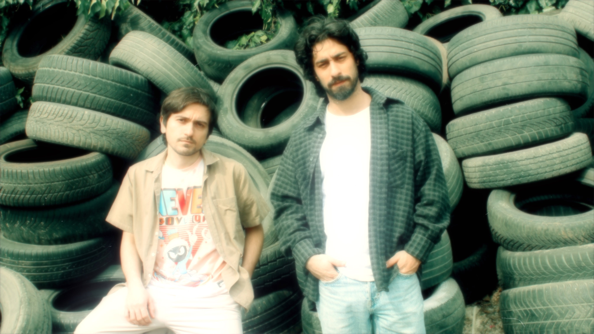

Dünyalar dönmüş eksenlerde 🪐
Dipriz, 2023 yılında Oğuz Takmaz ve Doğuhan Sakın tarafından kurulmuş psikedelik - alternatif rock grubudur. İstanbul merkezli olarak faaliyet gösteren ikili, kayıt süreçlerini tamamen kendi üretim altyapıları üzerinden ve bağımsız şekilde yürütmektedir.
Şu ana kadar üç albüm ve iki EP yayımlayan Dipriz, psikedelik rock'ın atmosferik yapısını ve alternatif rock'ın dinamik karakterini bir araya getirerek özgün bir ses estetiği oluşturmayı amaçlamaktadır. Deneysel dokular ve ritmik çeşitlilik, grubun müzikal yaklaşımının temel unsurlarını öne çıkarmaktadır. Dipriz, bağımsız bir ses ve kimlik inşa etmeyi hedeflemektedir.
| Albüm / EP | Yıl |
|---|---|
| Vertigo, Vol. 2 | 2025 |
| Vertigo, Vol. 1 | 2024 |
| Paranoya | 2024 |
| Psikoz | 2024 |
| Halüsinasyon | 2023 |